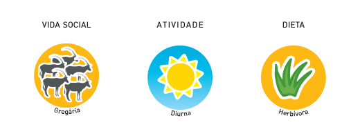
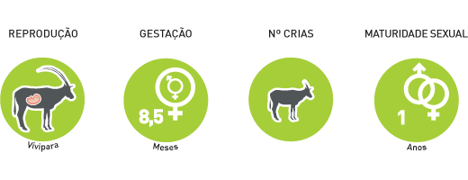
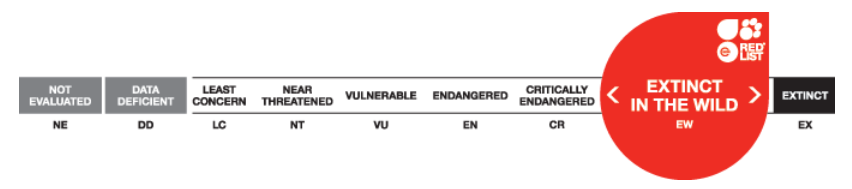

Scimitar-horned oryx
Oryx dammah
Order: artiodactyls
Family: bovinae
Characteristics

Both sexes have long, curved back horns with a length of approximately 1.2 m
Lifestyle

Oryx usually lives in small groups of up to 40 individuals.
Breeding

Each female can give young once a year, which is breast fed for 4 months of age.
Nesting site

Deserts and semi-deserts
Protection

Threats: hunting, habitat loss and competition in domestic animals have become the cause of their extinction.
Interesting facts
- Currently, efforts are designed to reintroduce species (re-introduction of species living on the old place) in many countries around the world.